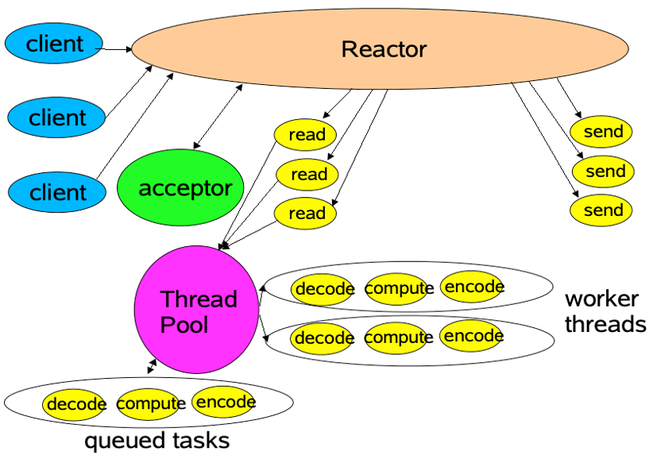
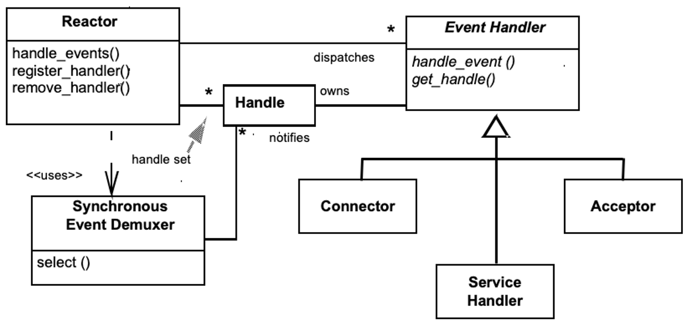
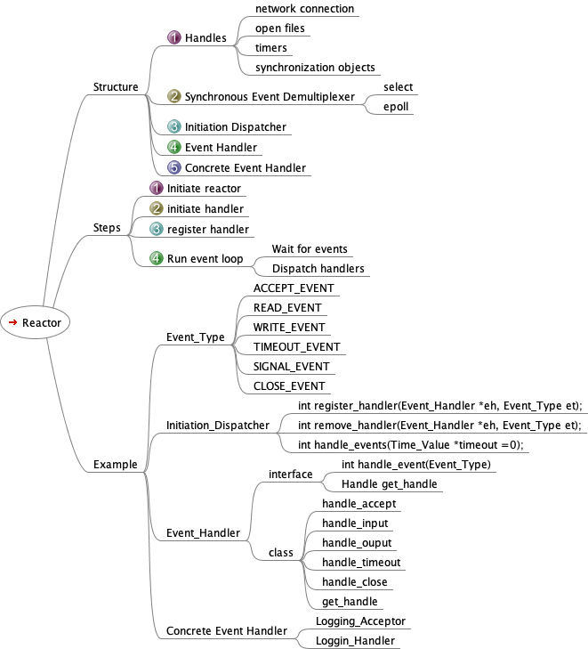

回顾 Reactor 模式
Posted on Sun 30 August 2020 in Tech • 4 min read
Reactor
作为网络编程库的核心模式的 Reactor 模式是网络编程中的最常用的模式，反应器 Reactor 又名分派器 Dispatcher, 或通知器 Notifier, 重温一下 POSA2 是对这个模式的描述
语境
An event-driven application that receives multiple service requests simultaneously, but processes them synchronously and serially.
事件驱动的应用程序同时接收到多个服务请求， 但是对这些事件处理是同步和顺序的
问题
Event-driven applications in a distributed system, particularly servers, must be prepared to handle multiple service requests simultaneously, even if those requests are ultimately processed serially within the application.
The arrival of each request is identified by a specific indication event, such as the CONNECT and READ events in our logging example.
Before executing specific services serially, therefore, an event-driven application must demultiplex and dispatch the concurrently-arriving indication events to the corresponding service implementations. Resolving this problem effectively requires the resolution of four forces:
分布式系统中的事件驱动应用程序，尤其是服务器，必须准备好同时处理多个服务请求，即使这些请求最终在应用程序中进行了串行处理。
每个请求的到达都由特定的指示事件标识，因此，在串行执行特定服务之前，事件驱动的应用程序必须解复用并将并发到达的指示事件分派到相应的服务实现。
有效地解决此问题需要四方面的力量：
-
1) 不要阻塞和等待
To improve scalability and latency, an application should not block on any single source of indication events and exclude other event sources, because blocking on one event source can degrade the server's responsiveness to clients.
-
2) 减少上下文的切换
To maximize throughput, any unnecessary context switching, synchronization, and data movement among CPUs should be avoided, as outlined in the Example section.
-
3) 要很容易地与已有的多路分解和分派机制集成
Integrating new or improved services with existing indication event demultiplexing and dispatching mechanisms should require minimal effort.
-
4) 应用程序代码可以隔离这些多线程和同步机制的复杂性
Application code should largely be shielded from the complexity of multi-threading and synchronization mechanisms.
解决方案
Doug Lea 画过一张图，可以形象地解释这个模式

-
同步等待多个事件源的指示事件的到达，
Synchronously wait for the arrival of indication events on one or more event sources, such as connected socket handles.
-
将对事件多路分解以及分配的机制与处理它们的服务进行集成
Integrate the mechanisms that demultiplex and dispatch the events to services that process them.
-
将这些事件多路分解以及分配的机制与处理事件的应用逻辑在服务中分开
Decouple these event demultiplexing and dispatching mechanisms from the application-specific processing of indication events within the services.

最后总结一下思维导图

用 Java NIO 库写一个简单的例子:
- Reactor.java
package com.github.walterfan.hellonetty.reactor;
import lombok.extern.slf4j.Slf4j;
import java.io.IOException;
import java.net.InetSocketAddress;
import java.nio.channels.SelectionKey;
import java.nio.channels.Selector;
import java.nio.channels.ServerSocketChannel;
import java.nio.channels.SocketChannel;
import java.util.Iterator;
import java.util.concurrent.ExecutorService;
import java.util.concurrent.Executors;
@Slf4j
public class Reactor implements Runnable {
private final Selector selector;
private final ServerSocketChannel serverChannel;
private volatile boolean isStopRequested = false;
public Reactor(int port) throws IOException {
selector = Selector.open();
serverChannel = ServerSocketChannel.open();
serverChannel.socket().bind(new InetSocketAddress(port));
serverChannel.configureBlocking(false);
// Register the server socket channel with interest-set set to ACCEPT operation
SelectionKey sk = serverChannel.register(selector, SelectionKey.OP_ACCEPT);
sk.attach(new Acceptor());
}
public void run() {
try {
while (!isStopRequested) {
selector.select();
Iterator it = selector.selectedKeys().iterator();
while (it.hasNext()) {
SelectionKey sk = (SelectionKey) it.next();
it.remove();
Runnable r = (Runnable) sk.attachment();
if (r != null)
r.run();
}
}
} catch (IOException ex) {
log.error("process socket error", ex);
}
log.info("stop running");
}
public void stop() {
this.isStopRequested = true;
}
class Acceptor implements Runnable {
public void run() {
try {
SocketChannel channel = serverChannel.accept();
if (channel != null)
new Handler(selector, channel);
} catch (IOException ex) {
log.error("accept socket error", ex);
}
}
}
}
- Handler.java
package com.github.walterfan.hellonetty.reactor;
import lombok.extern.slf4j.Slf4j;
import java.io.IOException;
import java.nio.ByteBuffer;
import java.nio.channels.SelectionKey;
import java.nio.channels.Selector;
import java.nio.channels.SocketChannel;
import java.nio.charset.Charset;
@Slf4j
public class Handler implements Runnable {
private final SocketChannel channel;
private final SelectionKey selectionKey;
private static final int READ_BUF_SIZE = 1024;
private static final int WRiTE_BUF_SIZE = 1024;
private ByteBuffer readBuf = ByteBuffer.allocate(READ_BUF_SIZE);
private ByteBuffer writeBuf = ByteBuffer.allocate(WRiTE_BUF_SIZE);
public Handler(Selector selector, SocketChannel sc) throws IOException {
channel = sc;
channel.configureBlocking(false);
// Register the socket channel with interest-set set to READ operation
selectionKey = channel.register(selector, SelectionKey.OP_READ);
selectionKey.attach(this);
selectionKey.interestOps(SelectionKey.OP_READ);
selector.wakeup();
}
public void run() {
try {
if (selectionKey.isReadable())
read();
else if (selectionKey.isWritable())
write();
} catch (IOException ex) {
log.error("read or write socket error", ex);
}
}
// Process data by echoing input to output
synchronized void process() {
byte[] bytes;
readBuf.flip();
bytes = new byte[readBuf.remaining()];
readBuf.get(bytes, 0, bytes.length);
log.info("process(): " + new String(bytes, Charset.forName("utf-8")));
writeBuf = ByteBuffer.wrap(bytes);
// Set the key's interest to WRITE operation
selectionKey.interestOps(SelectionKey.OP_WRITE);
selectionKey.selector().wakeup();
}
synchronized void read() throws IOException {
int numBytes;
try {
numBytes = channel.read(readBuf);
log.info("read(): #bytes read into 'readBuf' buffer = " + numBytes);
if (numBytes == -1) {
selectionKey.cancel();
channel.close();
log.warn("read(): client connection might have been dropped!");
} else {
EchoServer.getWorkExecutor().execute(new Runnable() {
public void run() {
process();
}
});
}
} catch (IOException ex) {
log.error("read or write socket error", ex);
return;
}
}
void write() throws IOException {
int numBytes = 0;
try {
numBytes = channel.write(writeBuf);
log.info("write(): #bytes read from 'writeBuf' buffer = " + numBytes);
if (numBytes > 0) {
readBuf.clear();
writeBuf.clear();
// Set the key's interest-set back to READ operation
selectionKey.interestOps(SelectionKey.OP_READ);
selectionKey.selector().wakeup();
}
} catch (IOException ex) {
log.error("write socket error", ex);
}
}
}
- EchoServer.java
package com.github.walterfan.hellonetty.reactor;
import com.github.walterfan.hellonetty.IServer;
import com.google.common.util.concurrent.Uninterruptibles;
import lombok.Getter;
import lombok.extern.slf4j.Slf4j;
import sun.misc.Signal;
import sun.misc.SignalHandler;
import java.io.IOException;
import java.util.concurrent.ExecutorService;
import java.util.concurrent.Executors;
import java.util.concurrent.TimeUnit;
@Slf4j
@Getter
public class EchoServer implements IServer {
class ShutdownHandler implements SignalHandler {
@Override
public void handle(Signal signal) {
log.info("shutdown: {}", signal);
stop();
System.exit(0);
}
}
private static final int WORKER_POOL_SIZE = 10;
private static ExecutorService bossExecutor;
private static ExecutorService workExecutor;
private volatile boolean isStarted;
private Reactor reactor;
private SignalHandler shutdownHandler;
public static ExecutorService getWorkExecutor() {
return workExecutor;
}
@Override
public void init() throws IOException {
log.info("init...");
isStarted = false;
bossExecutor = Executors.newSingleThreadExecutor();
workExecutor = Executors.newFixedThreadPool(WORKER_POOL_SIZE);
shutdownHandler = new ShutdownHandler();
reactor = new Reactor(9090);
registerStopSignal();
}
@Override
public boolean isStarted() {
return isStarted;
}
@Override
public void start() {
log.info("start...");
if(isStarted) {
return;
}
bossExecutor.execute(reactor);
isStarted = true;
}
@Override
public void stop() {
log.info("stop...");
reactor.stop();
workExecutor.shutdownNow();
bossExecutor.shutdownNow();
isStarted = false;
Uninterruptibles.sleepUninterruptibly(3, TimeUnit.SECONDS);
log.info("stopped");
}
public void registerStopSignal() {
String osName = System.getProperties().getProperty("os.name");
log.info("os={}", osName);
Signal sigInt = new Signal("INT");
Signal sigTerm = new Signal("TERM");
Signal.handle(sigInt, this.shutdownHandler);
Signal.handle(sigTerm, this.shutdownHandler);
}
public static void main(String[] args) throws IOException {
EchoServer echoServer = new EchoServer();
echoServer.init();
echoServer.start();
log.info("started? {}", echoServer.isStarted());
Uninterruptibles.sleepUninterruptibly(Long.MAX_VALUE, TimeUnit.MINUTES);
}
}